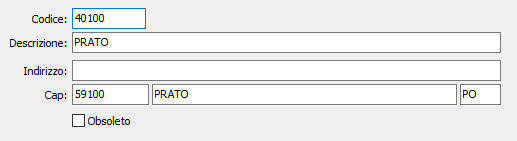

Sedi Inail
La tabella contiene l’elenco di tutte le sedi provinciali INAIL italiane. Il codice della sede Inail di appartenenza viene inserito nell’anagrafica dei percipienti sia per consentire il riparto dei contributi previdenziali fra le varie sedi Inail.

CODICE SEDE: codice alfanumerico di 6 caratteri, corrispondente alla codifica INAIL, che definisce la sede provinciale in esame. Sul campo sono attive le funzioni di vista sulla tabella stessa.
DESCRIZIONE: campo alfanumerico di 50 caratteri per descrivere la sede provinciale
INDIRIZZO: campo alfanumerico di 50 caratteri per descrivere l’indirizzo della sede provinciale
CAP: codice alfanumerico di 10 caratteri, presente nella tabella Codici postali.
COMUNE: codice alfanumerico di 50 caratteri modificabile dall’utente.
PROVINCIA: codice alfanumerico di 2 caratteri, presente nella tabella Province.